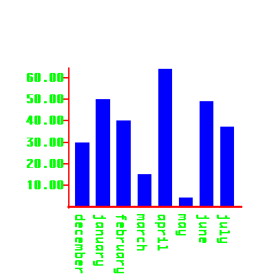

Test and demo of mouse tracking for image barchart.png.png
This automatically generated html example file demonstrates
how to use the javascript file barchart.png.js to map mouse
events over regions inside image barchart.png.png to javascript
call back actions defined in the function mouseChart.

information about the mouse event over
barchart.png.png should appear here.